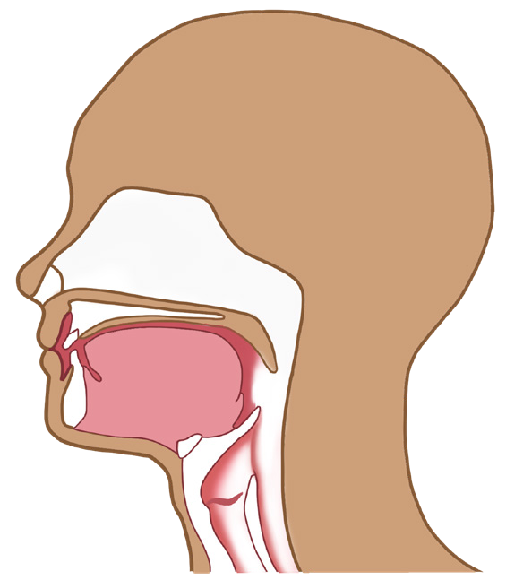
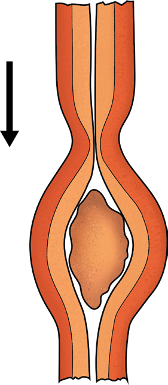

42
Student’s Book - Form Two
Biology for Secondary Schools

Oral cavity
Tongue
Mouth
Pharynx
Epiglottis
Oesophagus
Trachea
Figure 2.3: Structure of oral cavity
The oesophagus is a muscular tube connecting the pharynx with the upper part of the stomach. The food passes through the oesophagus by a series of wave-like muscular contractions and relaxations of the oesophagus walls.
Such series of muscular contractions is
called
peristalsis.
Peristalsis
facilitates the movement of food from the mouth to the pharynx as shown in Figure 2.4. The oesophagus walls have two types of muscles known as circular and longitudinal muscles that work antagonistically. As the food is swallowed, the circular muscles above the food bolus contract and longitudinal muscles relax making the lumen smaller and squeezing food bolus downwards.

Longitudinal muscles
Circular muscles
Circular muscles contract
Circular muscles relax
Lumen
Longitudinal muscles relax
Food bolus
Figure 2.4: Peristaltic movement of food
The peristaltic movement of food along
the oesophagus continues until it reaches
the stomach. At the junction between the
oesophagus and the stomach, there is a
ring of muscles called cardiac sphincter.
When the food reaches this point, the
muscles automatically relax and allow
the food to enter the stomach. Once
the food is in the stomach, the cardiac
sphincter muscles contract and close the
entrance into the stomach. This prevents
08/04/2026 10:18:14